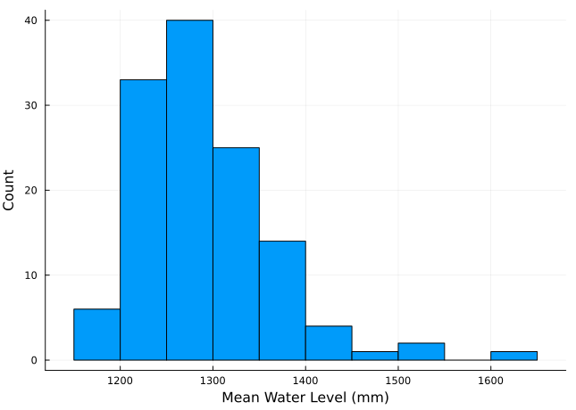

using Turing
using Distributions
using Plots
default(fmt = :png) # the tide gauge data is long, this keeps images a manageable size
using LaTeXStrings
using StatsPlots
using Measures
using StatsBase
using Optim
using Random
using DataFrames
using DataFramesMeta
using Dates
using CSVMarkov Chain Monte Carlo With Turing
Overview
This tutorial will give some examples of using Turing.jl and Markov Chain Monte Carlo to sample from posterior distributions.
Setup
As this tutorial involves random number generation, we will set a random seed to ensure reproducibility.
Random.seed!(1);Fitting A Linear Regression Model
Let’s start with a simple example: fitting a linear regression model to simulated data.
Positive Control Tests
Simulating data with a known data-generating process and then trying to obtain the parameters for that process is an important step in any workflow.
Simulating Data
The data-generating process for this example will be: \[ \begin{gather} y = 5 + 2x + \varepsilon \\ \varepsilon \sim \text{Normal}(0, 3), \end{gather} \] where \(\varepsilon\) is so-called “white noise”, which adds stochasticity to the data set. The generated dataset is shown in Figure 1.

Model Specification
The statistical model for a standard linear regression problem is \[ \begin{gather} y = a + bx + \varepsilon \\ \varepsilon \sim \text{Normal}(0, \sigma). \end{gather} \]
Rearranging, we can rewrite the likelihood function as: \[y \sim \text{Normal}(\mu, \sigma),\] where \(\mu = a + bx\). This means that we have three parameters to fit: \(a\), \(b\), and \(\sigma^2\).
Next, we need to select priors on our parameters. We’ll use relatively generic distributions to avoid using the information we have (since we generated the data ourselves), but in practice, we’d want to use any relevant information that we had from our knowledge of the problem. Let’s use relatively diffuse normal distributions for the trend parameters \(a\) and \(b\) and a half-normal distribution (a normal distribution truncated at 0, to only allow positive values) for the variance \(\sigma^2\), as recommended by Gelman (2006).
Gelman, A. (2006). Prior distributions for variance parameters in hierarchical models (comment on article by Browne and Draper). Bayesian Anal., 1(3), 515–533. https://doi.org/10.1214/06-BA117A
\[ \begin{gather} a \sim \text{Normal(0, 10)} \\ b \sim \text{Normal(0, 10)} \\ \sigma \sim \text{Half-Normal}(0, 25) \end{gather} \]
Using Turing
Coding the Model
Turing.jl uses the @model macro to specify the model function. We’ll follow the setup in the Turing documentation.
To specify distributions on parameters (and the data, which can be thought of as uncertain parameters in Bayesian statistics), use a tilde ~, and use equals = for transformations (which we don’t have in this case).
@model function linear_regression(x, y)
# set priors
σ ~ truncated(Normal(0, 25); lower=0)
a ~ Normal(0, 10)
b ~ Normal(0, 10)
# compute the likelihood
for i = 1:length(y)
# compute the mean value for the data point
μ = a + b * x[i]
y[i] ~ Normal(μ, σ)
end
end- 1
- Standard deviations must be positive, so we use a normal distribution truncated at zero.
- 2
- We’ll keep these both relative uninformative to reflect a more “realistic” modeling scenario.
- 3
- In this case, we specify the likelihood with a loop. We could also rewrite this as a joint likelihood over all of the data using linear algebra, which might be more efficient for large and/or complex models or datasets, but the loop is more readable in this simple case.
linear_regression (generic function with 2 methods)Fitting The Model
Now we can call the sampler to draw from the posterior. We’ll use the No-U-Turn sampler (Hoffman & Gelman, 2014), which is a Hamiltonian Monte Carlo algorithm (a different category of MCMC sampler than the Metropolis-Hastings algorithm discussed in class). We’ll also use 4 chains so we can test that the chains are well-mixed, and each chain will be run for 5,000 iterations1
1 Hamiltonian Monte Carlo samplers often need to be run for fewer iterations than Metropolis-Hastings samplers, as the exploratory step uses information about the gradient of the statistical model, versus the random walk of Metropolis-Hastings. The disadvantage is that this gradient information must be available, which is not always the case for external simulation models. Simulation models coded in Julia can usually be automatically differentiated by Turing’s tools, however.
Hoffman, M. D., & Gelman, A. (2014). The No-U-Turn sampler: Adaptively setting path lengths in Hamiltonian Monte Carlo. J. Mach. Learn. Res., 15(47), 1593–1623.
# set up the sampler
model = linear_regression(x, y)
n_chains = 4
n_per_chain = 5000
chain = sample(model, NUTS(), MCMCThreads(), n_per_chain, n_chains, drop_warmup=true)
@show chain- 1
- Initialize the model with the data.
- 2
- We use multiple chains to help diagnose convergence.
- 3
- This sets the number of iterations for each chain.
- 4
-
Sample from the posterior using NUTS and drop the iterations used to warmup the sampler. The
MCMCThreads()call tells the sampler to use available processor threads for the multiple chains, but it will just sample them in serial if only one thread exists. - 5
-
The
@showmacro makes the display of the output a bit cleaner.
┌ Warning: Only a single thread available: MCMC chains are not sampled in parallel
└ @ AbstractMCMC ~/.julia/packages/AbstractMCMC/F9Hbk/src/sample.jl:296┌ Info: Found initial step size
└ ϵ = 0.00625
┌ Info: Found initial step size
└ ϵ = 0.025┌ Info: Found initial step size
└ ϵ = 0.2
┌ Info: Found initial step size
└ ϵ = 0.003125Sampling (1 threads): 50%|██████████████▌ | ETA: 0:00:00Sampling (1 threads): 100%|█████████████████████████████| Time: 0:00:01chain = MCMC chain (5000×15×4 Array{Float64, 3})Chains MCMC chain (5000×15×4 Array{Float64, 3}):
Iterations = 1001:1:6000
Number of chains = 4
Samples per chain = 5000
Wall duration = 17.6 seconds
Compute duration = 14.44 seconds
parameters = σ, a, b
internals = lp, n_steps, is_accept, acceptance_rate, log_density, hamiltonian_energy, hamiltonian_energy_error, max_hamiltonian_energy_error, tree_depth, numerical_error, step_size, nom_step_size
Summary Statistics
parameters mean std mcse ess_bulk ess_tail rhat ⋯
Symbol Float64 Float64 Float64 Float64 Float64 Float64 ⋯
σ 5.3881 0.9886 0.0097 10835.5758 10595.6871 1.0003 ⋯
a 7.3483 2.1028 0.0231 8360.9948 8903.0798 1.0002 ⋯
b 1.7993 0.1865 0.0021 8290.7784 8803.3686 1.0003 ⋯
1 column omitted
Quantiles
parameters 2.5% 25.0% 50.0% 75.0% 97.5%
Symbol Float64 Float64 Float64 Float64 Float64
σ 3.8905 4.6873 5.2471 5.9322 7.7226
a 3.1190 5.9784 7.3761 8.7487 11.4444
b 1.4350 1.6773 1.7968 1.9214 2.1732
How can we interpret the output? The first parts of the summary statistics are straightforward: we get the mean, standard deviation, and Monte Carlo standard error (mcse) of each parameter. We also get information about the effective sample size (ESS)2 and \(\hat{R}\), which measures the ratio of within-chain variance and across-chain variance as a check for convergence3.
2 The ESS reflects the efficiency of the sampler: this is an estimate of the equivalent number of independent samples; the more correlated the samples, the lower the ESS.
3 The closer \(\hat{R}\) is to 1, the better.
In this case, we can see that we were generally able to recover the “true” data-generating values of \(\sigma = 4\) and \(b = 2\), but \(a\) is slightly off (the mean is 3, rather than the data-generating value of 5). In fact, there is substantial uncertainty about \(a\), with a 95% credible interval of \((3.1, 11.4)\) (compared to \((1.4, 2.2)\) for \(b\)). This isn’t surprising: given the variance of the noise \(\sigma^2\), there are many different intercepts which could fit within that spread.
Let’s now plot the chains for visual inspection.
plot(chain)
We can see from Figure 2 that our chains mixed well and seem to have converged to similar distributions! The traceplots have a “hairy caterpiller” appearance, suggesting relatively little autocorrelation. We can also see how much more uncertainty there is with the intercept \(a\), while the slope \(b\) is much more constrained.
Another interesting comparison we can make is with the maximum-likelihood estimate (MLE), which we can obtain through optimization.
mle_model = linear_regression(x, y)
mle = optimize(mle_model, MLE())
coef(mle)- 1
-
This is where we use the
Optim.jlpackage in this tutorial.
3-element Named Vector{Float64}
A │
───┼────────
σ │ 4.75545
a │ 7.65636
b │ 1.77736We could also get the maximum a posteriori (MAP) estimate, which includes the prior density, by replacing MLE() with MAP().
Model Diagnostics and Posterior Predictive Checks
One advantage of the Bayesian modeling approach here is that we have access to a generative model, or a model which we can use to generate datasets. This means that we can now use Monte Carlo simulation, sampling from our posteriors, to look at how uncertainty in the parameter estimates propagates through the model. Let’s write a function which gets samples from the MCMC chains and generates datasets.
function mc_predict_regression(x, chain)
# get the posterior samples
a = Array(group(chain, :a))
b = Array(group(chain, :b))
σ = Array(group(chain, :σ))
# loop and generate alternative realizations
μ = a' .+ x * b'
y = zeros((length(x), length(a)))
for i = 1:length(a)
y[:, i] = rand.(Normal.(μ[:, i], σ[i]))
end
return y
end- 1
-
The
Array(group())syntax is more general than we need, but is useful if we have multiple variables which were sampled as a group, for example multiple regression coefficients. Otherwise, we can just use e.g.Array(chain, :a).
mc_predict_regression (generic function with 1 method)Now we can generate a predictive interval and median and compare to the data.
x_pred = 0:20
y_pred = mc_predict_regression(x_pred, chain)21×20000 Matrix{Float64}:
-0.440341 14.2143 3.73736 3.98402 … 13.9896 12.1475 5.46884
-7.87522 4.36333 -7.19389 3.34537 9.48413 11.4606 3.81313
17.3151 8.9222 0.292523 12.9925 7.6094 11.5593 10.3064
2.28767 7.4078 9.09122 9.90026 21.4866 21.4643 4.38994
23.1321 9.28746 9.56973 17.9069 14.6245 6.80164 23.3068
10.0429 12.6741 23.6552 24.0107 … 17.07 12.9291 19.7511
23.3753 33.5452 11.6653 14.3672 21.4006 24.598 25.4434
11.6998 7.79426 16.9991 17.8128 8.01083 19.9234 17.2112
16.3753 22.476 20.8614 20.1019 15.169 22.8508 21.7635
17.1411 14.5313 32.2826 23.3866 27.5636 22.508 19.5266
27.7594 28.5052 30.7478 35.5763 … 22.858 27.8321 17.396
28.2636 24.2078 23.8358 27.5576 23.1143 30.4325 25.8818
35.3991 39.3917 40.5648 30.0351 29.1015 31.9592 38.7204
27.9246 34.618 30.7003 31.2341 20.0888 18.9489 24.3442
44.3301 21.7205 26.0331 34.8189 34.9326 26.6271 37.492
29.0048 45.0313 38.5674 34.2622 … 38.0261 42.037 26.6537
38.1531 35.6617 28.2519 36.4022 42.352 38.8477 38.4148
41.646 26.0779 38.9314 42.054 30.3764 37.7851 40.6086
38.4945 51.9845 42.9168 42.3723 37.3804 47.7923 38.3248
37.3901 44.5299 44.5209 46.5456 35.1081 43.7139 47.2316
55.3581 41.1191 45.0658 35.4023 … 40.9341 35.7394 36.0986Notice the dimension of y_pred: we have 20,000 columns, because we have 4 chains with 5,000 samples each. If we had wanted to subsample (which might be necessary if we had hundreds of thousands or millions of samples), we could have done that within mc_linear_regression before simulation.
# get the boundaries for the 95% prediction interval and the median
y_ci_low = quantile.(eachrow(y_pred), 0.025)
y_ci_hi = quantile.(eachrow(y_pred), 0.975)
y_med = quantile.(eachrow(y_pred), 0.5)Now, let’s plot the prediction interval and median, and compare to the original data.
# plot prediction interval
plot(x_pred, y_ci_low, fillrange=y_ci_hi, xlabel=L"$x$", ylabel=L"$y$", fillalpha=0.3, fillcolor=:blue, label="95% Prediction Interval", legend=:topleft, linealpha=0)
plot!(x_pred, y_med, color=:blue, label="Prediction Median")
scatter!(x, y, color=:red, label="Data")- 1
- Plot the 95% posterior prediction interval as a shaded blue ribbon.
- 2
- Plot the posterior prediction median as a blue line.
- 3
- Plot the data as discrete red points.

From Figure 3, it looks like our model might be slightly under-confident, as with 20 data points, we would expect 5% of them (or 1 data point) to be outside the 95% prediction interval. It’s hard to tell with only 20 data points, though! We could resolve this by tightening our priors, but this depends on how much information we used to specify them in the first place. The goal shouldn’t be to hit a specific level of uncertainty, but if there is a sound reason to tighten the priors, we could do so.
Now let’s look at the residuals from the posterior median and the data. The partial autocorrelations plotted in Figure 4 are not fully convincing, as there are large autocorrelation coefficients with long lags, but the dataset is quite small, so it’s hard to draw strong conclusions. We won’t go further down this rabbit hole as we know our data-generating process involved independent noise, but for a real dataset, we might want to try a model specification with autocorrelated errors to compare.
# calculate the median predictions and residuals
y_pred_data = mc_predict_regression(x, chain)
y_med_data = quantile.(eachrow(y_pred_data), 0.5)
residuals = y_med_data .- y
# plot the residuals and a line to show the zero
plot(pacf(residuals, 1:4), line=:stem, marker=:circle, legend=:false, grid=:false, linewidth=2, xlabel="Lag", ylabel="Partial Autocorrelation", markersize=8, tickfontsize=14, guidefontsize=16, legendfontsize=16)
hline!([0], linestyle=:dot, color=:red)
Fitting Extreme Value Models to Tide Gauge Data
Let’s now look at an example of fitting an extreme value distribution (namely, a generalized extreme value distribution, or GEV) to tide gauge data. GEV distributions have three parameters:
- \(\mu\), the location parameter, which reflects the positioning of the bulk of the GEV distribution;
- \(\sigma\), the scale parameter, which reflects the width of the bulk;
- \(\xi\), the shape parameter, which reflects the thickness and boundedness of the tail.
The shape parameter \(\xi\) is often of interest, as there are three classes of GEV distributions corresponding to different signs:
- \(\xi < 0\) means that the distribution is bounded;
- \(\xi = 0\) means that the distribution has a thinner tail, so the “extreme extremes” are less likely;
- \(\xi > 0\) means that the distribution has a thicker tail.
Load Data
First, let’s load the data. We’ll use data from the University of Hawaii Sea Level Center (Caldwell et al., 2015) for San Francisco, from 1897-2013. If you don’t have this data and are working with the notebook, download it here. We’ll assume it’s in a data/ subdirectory, but change the path as needed.
Caldwell, P. C., Merrifield, M. A., & Thompson, P. R. (2015). Sea level measured by tide gauges from global oceans — the joint archive for sea level holdings (NCEI accession 0019568). NOAA National Centers for Environmental Information (NCEI). https://doi.org/10.7289/V5V40S7W
The dataset consists of dates and hours and the tide-gauge measurement, in mm. We’ll load the dataset into a DataFrame.
function load_data(fname)
date_format = DateFormat("yyyy-mm-dd HH:MM:SS")
df = @chain fname begin
CSV.File(; delim=',', header=false)
DataFrame
rename("Column1" => "year",
"Column2" => "month",
"Column3" => "day",
"Column4" => "hour",
"Column5" => "gauge")
# need to reformat the decimal date in the data file
@transform :datetime = DateTime.(:year, :month, :day, :hour)
# replace -99999 with missing
@transform :gauge = ifelse.(abs.(:gauge) .>= 9999, missing, :gauge)
select(:datetime, :gauge)
end
return df
end- 1
-
This uses the
DataFramesMeta.jlpackage, which makes it easy to string together commands to load and process data - 2
- Load the file, assuming there is no header.
- 3
-
Convert to a
DataFrame. - 4
- Rename columns for ease of access.
- 5
-
Reformat the decimal datetime provided in the file into a Julia
DateTime. - 6
-
Replace missing data with
missing. - 7
-
Select only the
:datetimeand:gaugecolumns.
load_data (generic function with 1 method)dat = load_data("data/h551a.csv")
first(dat, 6)6×2 DataFrame
| Row | datetime | gauge |
|---|---|---|
| DateTime | Int64? | |
| 1 | 1897-08-01T08:00:00 | 3292 |
| 2 | 1897-08-01T09:00:00 | 3322 |
| 3 | 1897-08-01T10:00:00 | 3139 |
| 4 | 1897-08-01T11:00:00 | 2835 |
| 5 | 1897-08-01T12:00:00 | 2377 |
| 6 | 1897-08-01T13:00:00 | 2012 |
@df dat plot(:datetime, :gauge, label="Observations", bottom_margin=9mm)
xaxis!("Date", xrot=30)
yaxis!("Mean Water Level")- 1
-
This uses the
DataFrameplotting recipe with the@dfmacro fromStatsPlots.jl. This is not needed (you could replace e.g.:datetimewithdat.datetime), but it cleans things up slightly.

Next, we need to detrend the data to remove the impacts of sea-level rise. We do this by removing a one-year moving average, centered on the data point, per the recommendation of Arns et al. (2013).
# calculate the moving average and subtract it off
ma_length = 366
ma_offset = Int(floor(ma_length/2))
moving_average(series,n) = [mean(@view series[i-n:i+n]) for i in n+1:length(series)-n]
dat_ma = DataFrame(datetime=dat.datetime[ma_offset+1:end-ma_offset], residual=dat.gauge[ma_offset+1:end-ma_offset] .- moving_average(dat.gauge, ma_offset))
# plot
@df dat_ma plot(:datetime, :residual, label="Detrended Observations", bottom_margin=9mm)
xaxis!("Date", xrot=30)
yaxis!("Mean Water Level")
Arns, A., Wahl, T., Haigh, I. D., Jensen, J., & Pattiaratchi, C. (2013). Estimating extreme water level probabilities: A comparison of the direct methods and recommendations for best practise. Coast. Eng., 81, 51–66. https://doi.org/10.1016/j.coastaleng.2013.07.003
The last step in preparing the data is to find the annual maxima. We can do this using the groupby, transform, and combine functions from DataFrames.jl, as below.
# calculate the annual maxima
dat_ma = dropmissing(dat_ma)
dat_annmax = combine(dat_ma -> dat_ma[argmax(dat_ma.residual), :],
groupby(transform(dat_ma, :datetime => x->year.(x)), :datetime_function))
delete!(dat_annmax, nrow(dat_annmax))
# make a histogram of the maxima to see the distribution
histogram(dat_annmax.residual, label=false)
ylabel!("Count")
xlabel!("Mean Water Level (mm)")- 1
-
If we don’t drop the values which are missing, they will affect the next call to
argmax. - 2
-
This first groups the data based on the year (with
groupbyand usingDates.year()to get the year of each data point), then pulls the rows which correspond to the maxima for each year (usingargmax). - 3
- This will delete the last year, in this case 2023, because the dataset only goes until March 2023 and this data point is almost certainly an outlier due to the limited data from that year.

Fit The Model
@model function gev_annmax(y)
μ ~ Normal(1000, 100)
σ ~ truncated(Normal(0, 100); lower=0)
ξ ~ Normal(0, 0.5)
y ~ GeneralizedExtremeValue(μ, σ, ξ)
end
gev_model = gev_annmax(dat_annmax.residual)
n_chains = 4
n_per_chain = 5000
gev_chain = sample(gev_model, NUTS(), MCMCThreads(), n_per_chain, n_chains; drop_warmup=true)
@show gev_chain- 1
- Location parameter prior: We know that this is roughly on the 1000 mm order of magnitude, but want to keep this relatively broad.
- 2
- Scale parameter prior: This parameter must be positive, so we use a normal truncated at zero.
- 3
- Shape parameter prior: These are usually small and are hard to constrain, so we will use a more informative prior.
- 4
- The data is independently GEV-distributed as we’ve removed the long-term trend and are using long blocks.
- 5
- Initialize the model.
- 6
- We use multiple chains to help diagnose convergence.
- 7
- This sets the number of iterations for each chain.
- 8
- Sample from the posterior using NUTS and drop the iterations used to warmup the sampler.
┌ Warning: Only a single thread available: MCMC chains are not sampled in parallel
└ @ AbstractMCMC ~/.julia/packages/AbstractMCMC/F9Hbk/src/sample.jl:296┌ Info: Found initial step size
└ ϵ = 0.2
┌ Info: Found initial step size
└ ϵ = 0.0125┌ Info: Found initial step size
└ ϵ = 0.2
┌ Info: Found initial step size
└ ϵ = 0.2Sampling (1 threads): 50%|██████████████▌ | ETA: 0:00:03Sampling (1 threads): 100%|█████████████████████████████| Time: 0:00:06gev_chain = MCMC chain (5000×15×4 Array{Float64, 3})Chains MCMC chain (5000×15×4 Array{Float64, 3}):
Iterations = 1001:1:6000
Number of chains = 4
Samples per chain = 5000
Wall duration = 13.26 seconds
Compute duration = 12.89 seconds
parameters = μ, σ, ξ
internals = lp, n_steps, is_accept, acceptance_rate, log_density, hamiltonian_energy, hamiltonian_energy_error, max_hamiltonian_energy_error, tree_depth, numerical_error, step_size, nom_step_size
Summary Statistics
parameters mean std mcse ess_bulk ess_tail rh ⋯
Symbol Float64 Float64 Float64 Float64 Float64 Float ⋯
μ 1257.8174 5.6701 0.0513 12216.6653 12642.3312 1.00 ⋯
σ 57.1982 4.3214 0.0366 14201.5441 12575.6044 1.00 ⋯
ξ 0.0292 0.0625 0.0008 5915.1552 7463.8803 1.00 ⋯
2 columns omitted
Quantiles
parameters 2.5% 25.0% 50.0% 75.0% 97.5%
Symbol Float64 Float64 Float64 Float64 Float64
μ 1246.8628 1253.9821 1257.8132 1261.6027 1269.2078
σ 49.4284 54.1859 56.9353 59.9665 66.3174
ξ -0.0811 -0.0151 0.0250 0.0699 0.1627
plot(gev_chain)
From Figure 8, it looks like all of the chains have converged to the same distribution; the Gelman-Rubin diagnostic is also close to 1 for all parameters. Next, we can look at a corner plot to see how the parameters are correlated.
corner(gev_chain)
Figure 9 suggests that the location and scale parameters \(\mu\) and \(\sigma\) are positively correlated. This makes some intuitive sense, as increasing the location parameter shifts the bulk of the distribution in a positive direction, and the increasing scale parameter then increases the likelihood of lower values. However, if these parameters are increased, the shape parameter \(\xi\) decreases, as the tail of the GEV does not need to be as thick due to the increased proximity of outliers to the bulk.